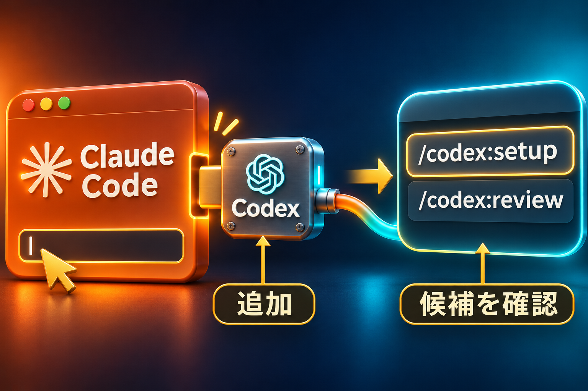

解説動画
動画を受け取り次第、掲載します
AIを行き来するだけで、
手が止まっていませんか？
- 返答を別のAIへ、また貼り直す
- 何をどこまで頼めばいいか迷う
- 作れたけど、確認まで手が回らない
受け渡しと修正もAIへ。自分は目的を決め、成果物を確かめる分担です。
AI社員を作って動かすなら、別々に使うだけではもったいない。相互チェックで、重い仕事も分担できます。
完成見本
CSVを渡して、レポートまで
練習用の架空データです。入力8行から集計した実物を開けます。
レポートを別画面で開く ↗始める前に
PCでClaude CodeとNode.js 18.18以降を用意。サインインして始めます。
必要な環境・利用枠を確認
Claude Codeを利用できるアカウントと、Codexを利用できるChatGPTアカウントが必要です。既存のCodex認証があれば再利用できます。ChatGPTの会話画面をつなぐ操作ではありません。
作業に使うフォルダを決め、その場所でClaude Codeを開きます。インストール方法は Claude Code公式、利用枠は Codex公式で確認できます。
この練習レポートを再生成するときだけPython 3を使います。完成HTMLを読むだけなら不要です。
1
Codexを追加する

Claude Codeへ1つずつ送信。
/plugin marketplace add openai/codex-plugin-cc
/plugin install codex@openai-codex
/reload-plugins
「/codex」の候補が出れば次へ。
2
ChatGPTでサインイン
① 状態を確認
/codex:setup
② 未ログインのときだけ
!codex login
未ログインなら②でログイン。
うまく進まないとき
Codex未導入ならsetupの案内に従います。確認画面の対象と権限を読んで進め、パスワードや認証コードをAIへ貼らないでください。ログイン済みなら再ログインは不要。
最後にもう一度 /codex:setup で準備状態を確認します。
候補が出ない場合は /reload-plugins を再実行し、それでも出なければClaude Codeを再起動します。インストール時のエラーは省略せず確認します。
3
役割分担を保存する
指示を送り、CLAUDE.mdを確認。
役割分担の指示文を開く
この作業フォルダでは、次の役割分担で進めてください。 ・Claude Code：目的の整理、全体の設計、最終確認。 ・Codex：公式Codexプラグインを使った実作業と修正。 依頼ごとに入力、出力先、完了条件を確認し、Claude Codeが設計してからCodexへ渡してください。Codexの成果物をClaude Codeが実物で確認し、問題があれば根拠と修正内容を返してください。できていない作業は完了と報告しないでください。 公開、送信、購入、削除、権限変更は実行せず、その直前で確認してください。 既存の指示を保持して、この方針をこのフォルダのCLAUDE.mdへ追記してください。保存した箇所と内容を見せてください。
まずは、この1件を任せる
キットを展開し、practiceフォルダでClaude Codeを開きます。
ガイドと練習キットを保存 ↓HTMLガイド・CSV・指示文・集計コード・完成レポート入り。
レポート制作の依頼文を開く
このフォルダのsales.csvから、売上レポートreport.htmlを作ってください。 Claude Codeが設計と最終確認、Codexが実装です。公式Codexプラグインを使って実装を委託してください。 条件：数量×単価を行ごとに計算し、総売上、商品別売上、数量を表示。商品別は売上降順。金額は円記号と桁区切りを付ける。CSVはUTF-8 BOMありでも読む。外部依存を使わず、スマホでも読めるHTMLにする。 Python 3の標準ライブラリだけで動くbuild_report.pyも作り、CSV変更後に再生成できるようにしてください。 最後にClaude Codeが元CSVから独立に計算し、数値、並び順、スマホ表示を確認。問題があればCodexへ修正を依頼してください。 このフォルダ内だけで作業し、公開や設定変更はしないでください。
できたものの確認と保存
- report.htmlをブラウザで開く。
- 総売上34,400円、数量19、商品別が講座→相談会→音声教材の順か見る。
- 違えば「元CSVと合わない箇所」を示し、Codexへの修正をClaude Codeに依頼する。
- sales.csvとbuild_report.pyとreport.htmlを同じフォルダで保存する。
入力を変えた後は、このフォルダで python build_report.py を実行してレポートを再生成できます。キット内の「はじめに.html」に、ファイルの開き方もあります。
役割を保存し、元データと成果物を照合できれば完了。次は自分の仕事を1件、同じ形で渡してみてください。
ほかの仕事と使用量
SNS台本の下書き、LPの制作、集計レポート、調べた資料の整理など。目的・元素材・完成条件を渡し、出力を実物で確認します。今回の練習はCSVからレポートを作る例です。
Codex側の仕事はCodexの利用枠へ計上されます。Claude側の設計・確認も消費するので、合計トークンやコストが必ず減るという意味ではありません。往復や検査を増やすほど使用量は増えます。
検査コマンドと自動レビュー
/codex:review は読み取り専用の検査。作業を依頼するなら /codex:rescue、進み具合は /codex:status、完了結果は /codex:result、停止は /codex:cancel を使えます。
任意の自動レビューは /codex:setup --enable-review-gate で有効化します。長い修正ループになり得るため、見守れるときだけ使います。
解除は /codex:setup --disable-review-gate。今回の練習には必須ではありません。
各コマンドの役割は OpenAI公式プラグインで確認できます。モデルは各環境で利用できるものを選びます。
AIに任せる形ができたら、次は何の仕事に使うか。SNSで収益につなぐ流れは、7日間の音声で学べます。